Galerie · Enzenreith bei Gloggnitz
Ausgewählte Arbeiten und Referenzen.
-
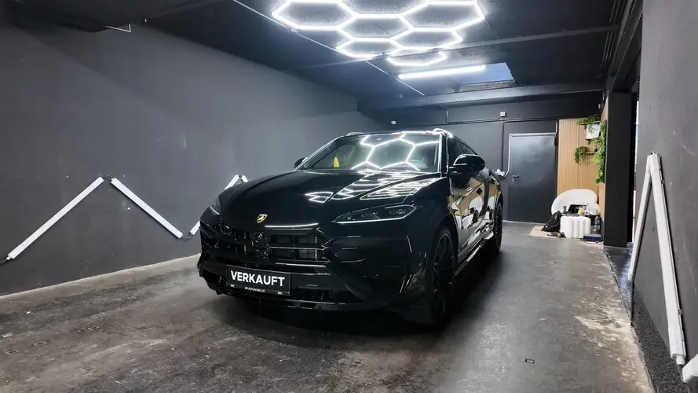
Lamborghini Urus SEExterieur Finish -
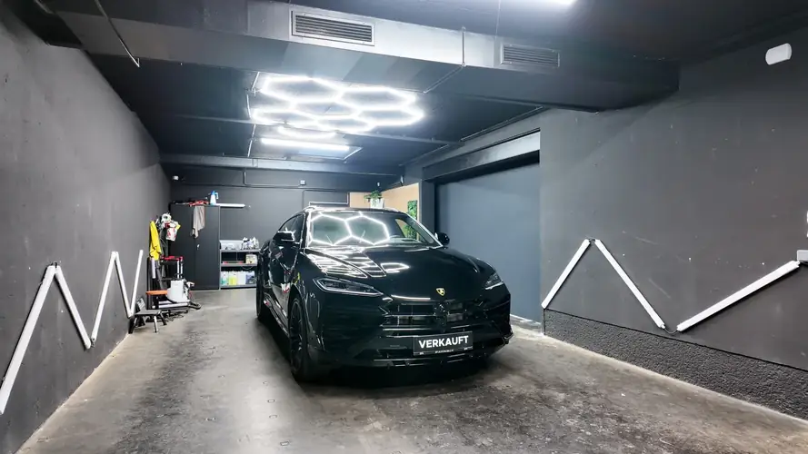
Lamborghini Urus SEFrontansicht -
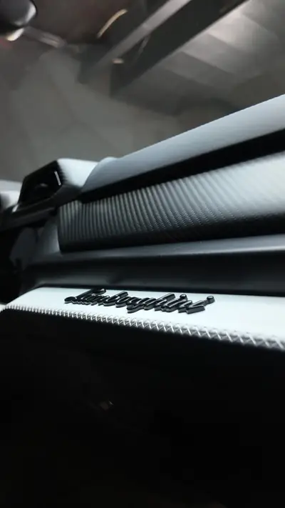
Lamborghini Urus SEInterieur Detail -
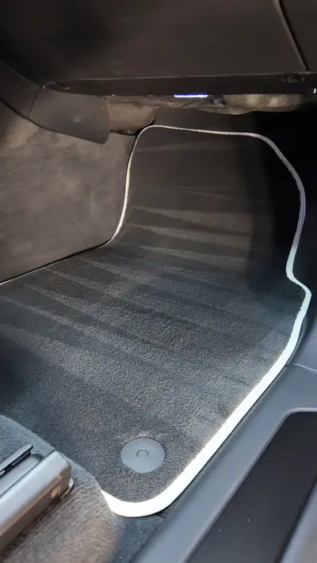
Lamborghini Urus SEFußraum -
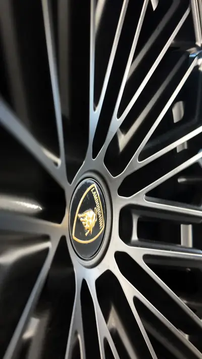
Lamborghini Urus SEFelge und Emblem -
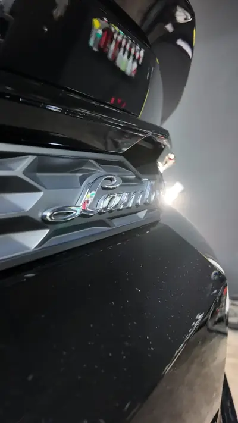
Lamborghini Urus SEHeck Detail -
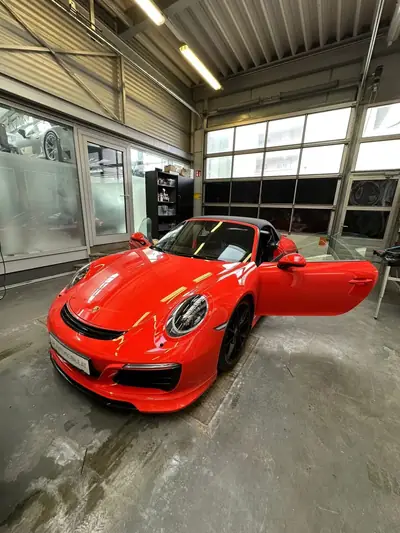
Porsche 911 CabrioShowcase Finish -
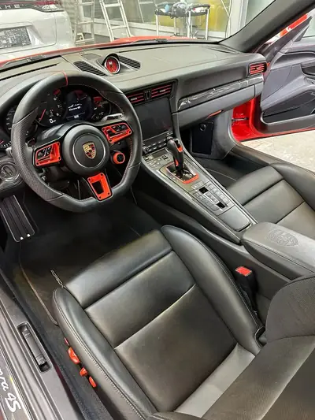
Porsche 911 CockpitInnenraum Detail -
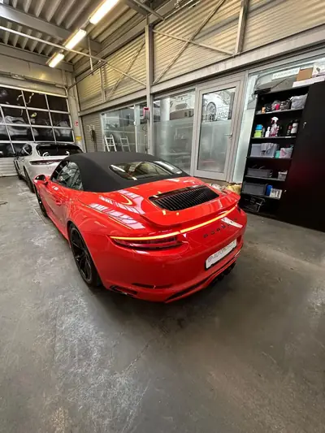
Porsche 911 HeckExterieur Abschluss -
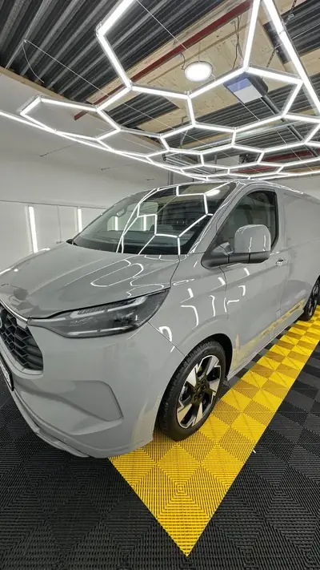
Ford Transit CustomFlächenfinish -
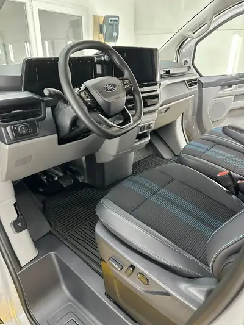
Ford Transit CockpitCockpit Aufbereitung -
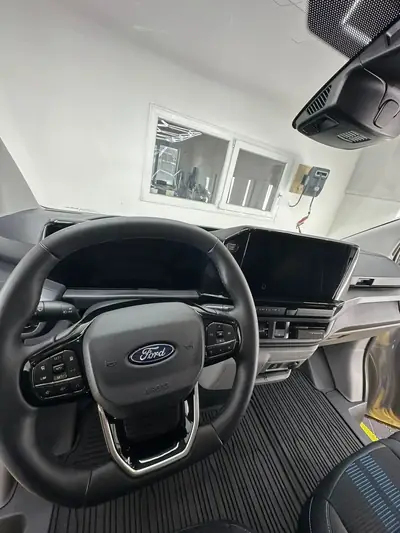
Ford Transit DashboardDetail Reinigung -
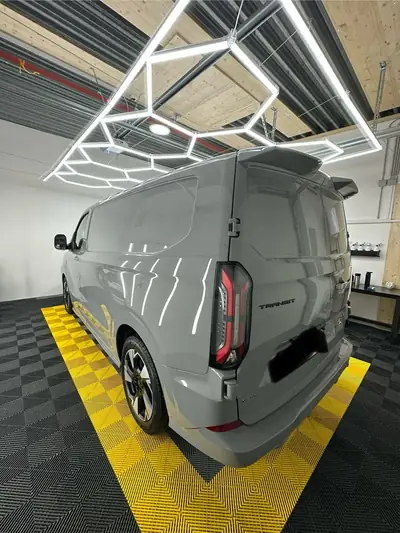
Ford Transit CustomReflexionskontrolle -
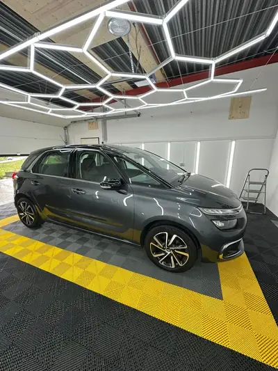
Citroën C4 PicassoReflexionskontrolle -
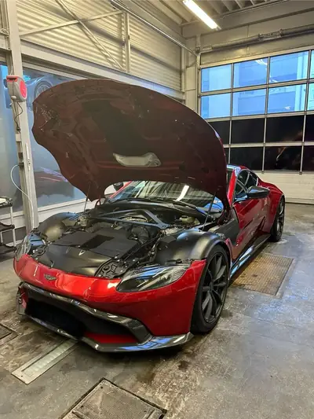
Aston Martin VantageMotorraum Detail -
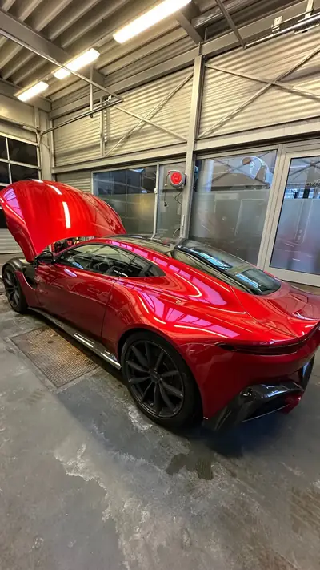
Aston Martin VantageExterieur Rot -
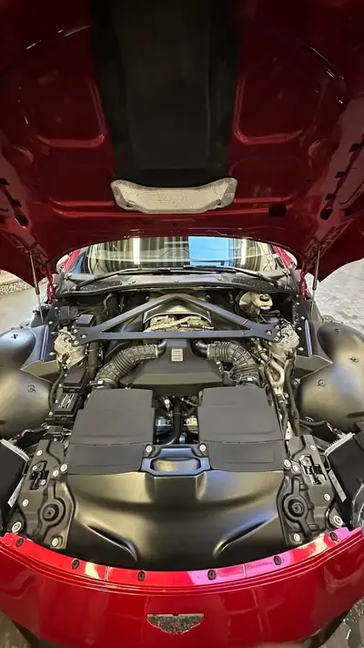
Aston Martin VantageMotor Aufbereitung -
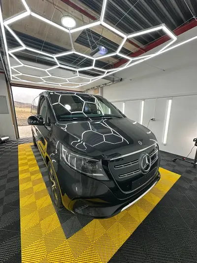
Mercedes-Benz V-KlasseExterieur Finish -
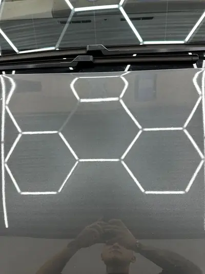
LackanalyseReflexion Nahaufnahme -
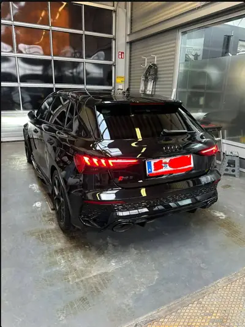
Audi RS3 SportbackExterieur Finish -
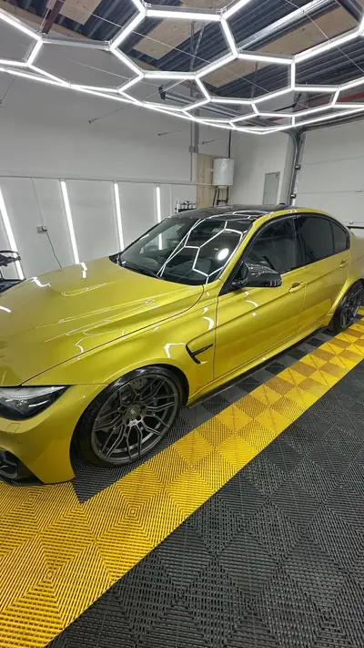
BMW M3 CompetitionKeramikversiegelung -
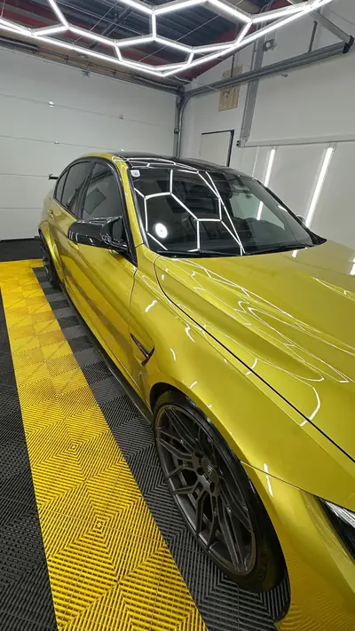
BMW M3 CompetitionFront Detail -
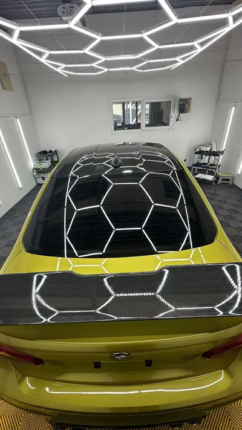
BMW M3 CompetitionCarbondach Detail -
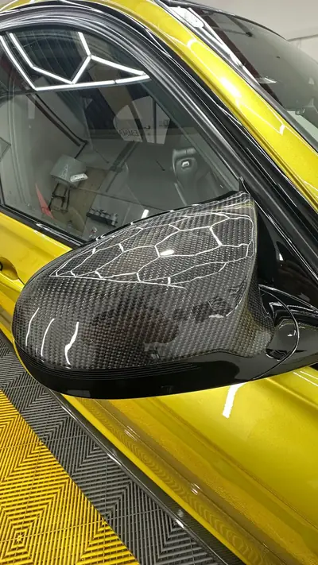
BMW M3 CompetitionCarbon Spiegel -
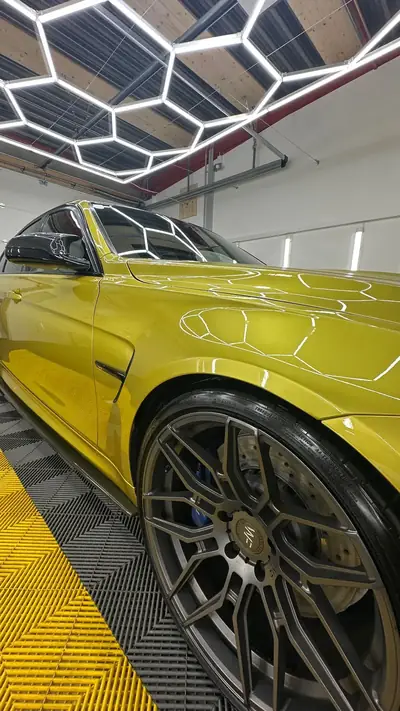
BMW M3 CompetitionFelgen & Bremse -
So soll Ihr Auto auch aussehen?


25 Aufnahmen · alle Kategorien
In Aktion
Professionelle Aufbereitung ·
Professionelle Aufbereitung ·
sichtbares Ergebnis.
Aus unserer Aufbereitungsstation in Enzenreith.
Direkter Kontakt
Interesse an einer Aufbereitung?
Einfach das passende Paket wählen und direkt per WhatsApp oder Telefon einen Termin vereinbaren.